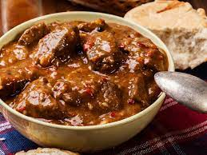

Beef goulash

Description
Arising from the nomadic tradition of the magyars, the original
gulyás
has been adapted and modified by different cultures. Outside of hungary it is common
to roast the beef gently before steaming. Either way it's an excellent choice for
everyone who enjoys a good meal of beef!
Ingredients
- 500g beef goulash
- 2 onions
- 2 cloves of garlic
- 1 tablespoon tomato purée
- ~600-800 ml stock
- paprika powder
- salt, pepper
- bay leaves
Directions
- Peel onions and cut into strips. Peel and mince garlic.
- Preheat big pan with one tablespoon of oil. Portionwise roast goulash gently and take out after.
- Put another tablespoon of oil into pan and braise onions lightly. After 1 minute add garlic, braise for another minute.
- Mix in tomato purée whilst stirring and roast.
- Pour a portion of stock into pan, allow it to reduce.
- Add rest of stock, bring to boil.
- Add seasonings, add beef afterwards.
- Let simmer for at least 3 hours (closed lid). Stir at least once every 30 minutes.
Noodles, rice or potatoes are a great side dish to goulash!
Back to overview